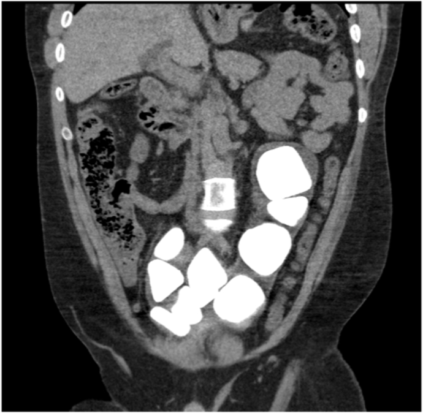
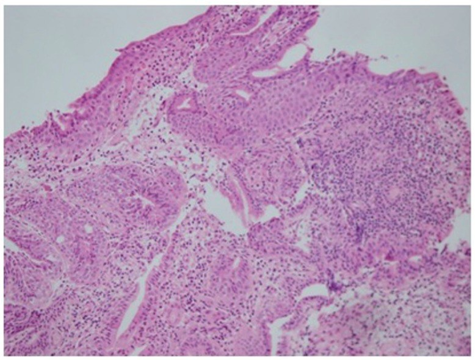
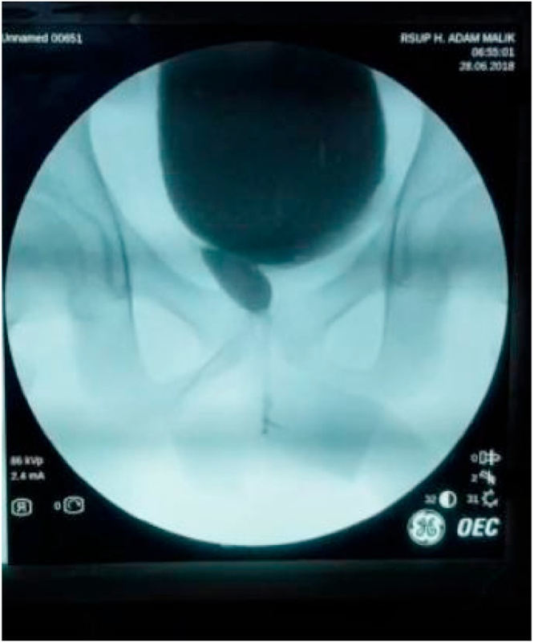
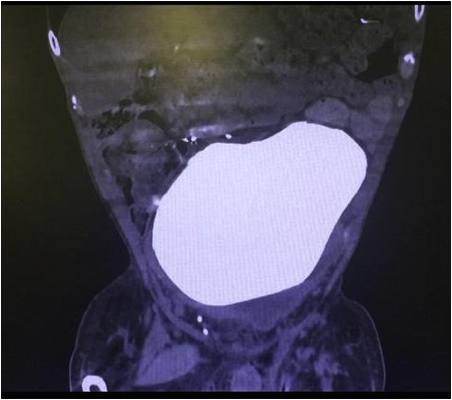

672 — Biến chứng muộn sau tái tạo bàng quang bằng ruột: sỏi, thủng tự phát, ung thư tại đoạn ruột / Late complications of augmentation cystoplasty
Tags: pattern:bien-chung-muon vung:tiet-nieu protocol:CT-KUB protocol:CT-cystogram score:Clavien-Dindo anatomy:bang-quang-than-kinh
Mức chắc chắn (certainty): tổng hợp y văn (literature synthesis) — cohort theo dõi dài hạn + ca minh họa có ảnh CC; ghi PMCID từng ảnh và từng con số.
1. Tổng quan bệnh học – cơ chế hình ảnh
- Tái tạo bàng quang bằng ruột (augmentation cystoplasty — AC, enterocystoplasty) dùng một đoạn ruột đã mở dọc và detubular hóa để làm bể chứa áp lực thấp, tăng dung tích và bảo vệ đường tiết niệu trên. Đoạn hồi tràng thường dùng dài 15–40 cm, lấy cách van hồi–manh tràng ít nhất 15–20 cm; đại tràng sigma là lựa chọn thay thế (Chang 2024, PMC10879155).
- Sỏi bàng quang (bladder stone) là biến chứng muộn thường gặp nhất và là lý do mổ lại hàng đầu. Cơ chế: chất nhầy (mucus) của ruột làm nhân kết tinh + tồn lưu nước tiểu + không tuân thủ CIC/tưới rửa + nhiễm khuẩn niệu do vi khuẩn phân hủy urê + dị vật (staples, bóng catheter). Tỷ lệ trong y văn 10–52% (Saadat 2018, PMC6022357); cohort trẻ 22 bệnh nhân theo dõi trung bình 13,4 ± 5,9 năm có 36,4% sỏi (Chang 2024, PMC10879155). Phẫu thuật cổ bàng quang làm tăng tỷ lệ sỏi từ 6% lên 14,7% (PMC6022357).
- Thủng bàng quang tự phát (spontaneous bladder perforation) là biến chứng đe dọa tính mạng, thường do căng quá mức vì bỏ CIC hoặc thiếu máu thành bể chứa. Tỷ lệ được báo cáo 1,9% trong một tổng quan dài hạn (Jeong 2020, PMC7538291) và 4,5% (1/22) trong cohort nhi (PMC10879155). Vì bệnh nhân thường mất cảm giác đau tạng, biểu hiện có thể chỉ là sốt, khó chịu, nôn, tăng creatinin — rất dễ bị quy nhầm cho nhiễm trùng tiểu.
- Ung thư tại đoạn ruột/bàng quang tái tạo (augmentation malignancy) hiếm nhưng là biến chứng muộn nặng nhất. Tỷ lệ trong các series 1,2–4,5% (Mammadov 2017, PMC5734080); một tổng quan so sánh ghi nhận 4,6% so với 2,6% ở nhóm chứng, với ung thư biểu mô tuyến 52%, ung thư biểu mô tế bào chuyển tiếp 39%, ung thư biểu mô vảy 6% (PMC7538291). U thường nằm quanh đường nối bàng quang–ruột, xuất hiện sau nhiều năm (phần lớn sau 10 năm), biểu hiện bằng đái máu vi thể/đại thể hoặc hẹp–tắc đường tiết niệu.
- Thiếu vitamin B12 và toan chuyển hóa: đoạn hồi tràng lấy đi mang theo vị trí hấp thu B12 và muối mật. Một nghiên cứu trích dẫn trong cohort nhi ghi nhận 62% bệnh nhân có B12 thấp/thấp–bình thường bắt đầu từ năm thứ 7 sau mổ; cohort 22 bệnh nhân của Chang 2024 chỉ có 1/22 (4,5%) thiếu B12 thực sự, B12 trung bình 448,8 ± 168,1 pg/mL (hồi tràng) so với 575,7 ± 274,4 pg/mL (đại tràng). Toan chuyển hóa tăng chlor máu gặp ở 3,3% trong tổng quan của Jeong 2020 (PMC7538291), có thể âm thầm và ảnh hưởng mật độ xương.
- TẠI SAO hình ảnh thay đổi:
- Sỏi: cấu trúc canxi hóa, cản quang cao, nằm trong lòng bể chứa; trên CT cửa sổ xương thấy rõ, có thể rất lớn và chiếm gần toàn bộ bàng quang (ca 16,8 × 9,2 cm). Trên siêu âm: cung tăng âm + bóng lưng; chất nhầy đặc có thể giả sỏi nhưng không có bóng lưng rõ và di động.
- Thủng: mất tính liên tục thành bể chứa + thoát thuốc cản quang ra ngoài lòng trên CT cystogram/CT niệu đồ; kèm dịch tự do trong phúc mạc, dày thành, khí ngoài lòng nếu có. Thủng trong phúc mạc thường gây viêm phúc mạc; thủng ngoài phúc mạc có thể khu trú hơn.
- Ung thư: mô ruột chuyển sản/loạn sản → khối đặc, ngấm thuốc không đều, có thể loét, vôi hóa, gây hẹp lòng hoặc ứ nước thận. Trên MRI, mô u hạn chế khuếch tán và ngấm thuốc; cần sinh thiết để chốt.
- Di chứng chuyển hóa: không có tổn thương đặc hiệu trên hình ảnh; chẩn đoán bằng khí máu, B12, creatinine, hình ảnh dùng để tìm biến chứng cơ học và theo dõi thận.
2. Mẫu hình + chẩn đoán phân biệt theo vị trí (gamut)
- Theo thời gian:
- Sớm (< 30 ngày): rò miệng nối, tắc ruột, nhiễm trùng vết mổ, huyết khối tĩnh mạch sâu, suy thận cấp.
- Muộn (> 30 ngày): sỏi, thủng tự phát, hẹp miệng nối, trào ngược/ứ nước, thiếu B12, toan chuyển hóa, loãng xương, ung thư tại đoạn ruột.
- Theo vị trí:
- Bể chứa (reservoir): sỏi, chất nhầy, thủng, u tại đường nối, túi thừa giả, dị vật.
- Đường nối bàng quang–ruột: hẹp, rò, u, loét.
- Đường tiết niệu trên: trào ngược bàng quang–niệu quản, ứ nước, sỏi thận, sẹo thận.
- Ruột: dính/tắc ruột, tiêu chảy do mất van hồi–manh tràng, thiếu B12/muối mật.
- Toàn thân: toan chuyển hóa, loãng xương, chậm tăng trưởng.
- Mẫu hình lâm sàng gợi ý:
- Sỏi: đái máu, nhiễm trùng tiểu tái phát, đau hạ vị, khó CIC, tình cờ trên X-quang/CT.
- Thủng: đau bụng + sốt + nôn + bụng phản ứng, có thể tụt huyết áp; ở bệnh nhân mất cảm giác, chỉ số viêm tăng là cờ đỏ.
- Ung thư: đái máu dai dẳng, nhiễm trùng tái phát, đau vùng chậu, sụt cân; đôi khi hẹp niệu quản hoặc ứ nước thận không rõ nguyên nhân.
- B12: thiếu máu hồng cầu to, dị cảm, mất thăng bằng, thoái hóa tủy sau–bên; có thể không triệu chứng.
- Bẫy dịch tễ: sỏi có thể xuất hiện rất muộn (ca 33 tuổi sau mổ từ tuổi thiếu niên; ca 42 tuổi sau ileocystoplasty năm 1996), nên không loại trừ vì thời gian dài.

CT bụng–chậu có cản quang: nhiều sỏi cản quang lớn lấp gần toàn bộ bàng quang tái tạo ở bệnh nhân spina bifida sau ileocystoplasty + Mitrofanoff. Nguồn: Ong K, Murtagh K, Urol Case Rep 2023;50:102536 (PMC10445452), Fig. 2, CC BY-NC-ND 4.0 — giữ nguyên bản, không crop/ghép.3. Bảng so sánh phân biệt (ma trận đối chiếu)
| Thực thể (entity) | Hình ảnh điển hình (US/CT/MRI) | Chốt vào (rule-in) | Chốt loại (rule-out) | Gợi ý xác nhận |
|---|---|---|---|---|
| Sỏi bàng quang | Cung tăng âm + bóng lưng trên US; khối cản quang trong lòng trên CT; có thể 16,8 × 9,2 cm | Cản quang cao + bóng lưng + nằm trong lòng bể chứa | Không cản quang, di động, đổi hình khi đổi tư thế → chất nhầy | CT KUB liều thấp; nội soi/tán sỏi |
| Chất nhầy (mucus ball) | Khối giả đặc, tăng âm nhẹ, không bóng lưng rõ, di động; có thể gây bí tiểu | Di động + thay đổi theo tư thế + không cản quang | Cản quang cao, cố định, bóng lưng → sỏi | Tưới rửa bàng quang; US lặp lại |
| Thủng trong phúc mạc | Thoát thuốc ra phúc mạc, dịch tự do, dày thành, có thể khí ngoài lòng | Thoát thuốc + dịch tự do + đau bụng/sốt | Không thoát thuốc + không dịch tự do → không thủng | CT cystogram với thuốc pha loãng qua catheter |
| Thủng ngoài phúc mạc | Dịch/thuốc quanh bàng quang, không lan vào phúc mạc; có thể khu trú | Thoát thuốc ngoài phúc mạc + đau vùng chậu | Thoát thuốc vào ổ phúc mạc → thể trong phúc mạc | CT cystogram; US bàng quang |
| Ung thư tại đoạn ruột | Khối đặc, ngấm thuốc không đều, loét/vôi hóa, hẹp lòng; MRI hạn chế khuếch tán | Đái máu + khối tại đường nối + > 10 năm sau mổ | Viêm/chuyển sản đơn thuần, không khối → chưa chốt ung thư | Cystoscopy + sinh thiết nhiều điểm |
| Viêm bàng quang/túi thừa | Thành dày, bè, túi thừa, cặn; không khối đặc | Thành dày + bè + cặn lắng | Khối đặc ngấm thuốc + hạn chế khuếch tán → nghi u | US/CT; soi bàng quang nếu nghi |
| Thiếu B12 | Không tổn thương đặc hiệu; MRI tủy có thể tăng T2 cột sau | B12 thấp + hồng cầu to + triệu chứng thần kinh | B12 bình thường → tìm nguyên nhân khác | Xét nghiệm B12, MMA/homocysteine |
| Toan chuyển hóa | Không có hình ảnh đặc hiệu; có thể loãng xương | HCO₃⁻ thấp + Cl⁻ cao + gap anion bình thường | Gap anion cao/toan hô hấp → nguyên nhân khác | Khí máu, điện giải, đánh giá xương |
Dấu hiệu chốt cần đọc đúng
- Sỏi rất lớn có thể che mất mọi cấu trúc lân cận; luôn đo kích thước 3 chiều và ghi vị trí so với miệng nối/cổ bàng quang để lên kế hoạch lấy sỏi.
- Thủng tự phát có thể không có khí tự do — không loại trừ bằng CT không cản quang. CT cystogram là chốt khi nghi ngờ.
- Đái máu ở bệnh nhân AC là cờ đỏ ung thư cho tới khi soi bàng quang loại trừ; đừng chỉ quy cho sỏi.
- B12 thấp có thể xuất hiện muộn; cohort riêng có thể chỉ 4,5% nhưng nghiên cứu khác báo tới 62% B12 thấp/thấp–bình thường từ năm thứ 7 — theo dõi định kỳ vẫn cần.
 CT niệu đồ ở bệnh nhân 18 tuổi spina bifida sau augmentation cystoplasty + Mitrofanoff: (A) axial, (B) coronal, (C) sagittal — vòng tròn = thoát thuốc hoạt tính; dấu × = dịch tự do trong phúc mạc; mũi tên = sỏi trong bàng quang tái tạo; ngôi sao = catheter trên xương mu. Nguồn: Anderson S et al., Radiol Case Rep 2022;17(11):4139-4143 (PMC9465360), Fig. 3, CC BY 4.0.
CT niệu đồ ở bệnh nhân 18 tuổi spina bifida sau augmentation cystoplasty + Mitrofanoff: (A) axial, (B) coronal, (C) sagittal — vòng tròn = thoát thuốc hoạt tính; dấu × = dịch tự do trong phúc mạc; mũi tên = sỏi trong bàng quang tái tạo; ngôi sao = catheter trên xương mu. Nguồn: Anderson S et al., Radiol Case Rep 2022;17(11):4139-4143 (PMC9465360), Fig. 3, CC BY 4.0.

Sinh thiết niêm mạc bàng quang tái tạo: chuyển sản ruột khu trú (H–E, ×200) trên nền viêm mạn — tổn thương này không đồng nghĩa ung thư nhưng là lý do theo dõi nội soi dài hạn. Nguồn: Mammadov E et al., Int Braz J Urol 2017;43(6):1152-1159 (PMC5734080), Fig. 2, CC BY 4.0.4. Protocol chụp + hệ phân độ/điểm chuẩn hóa
- Theo dõi định kỳ (lifelong surveillance): khám lâm sàng, huyết áp, urinalysis, creatinine/eGFR, khí máu, vitamin B12; siêu âm thận–bàng quang; đánh giá dung tích/áp lực bằng urodynamics khi có chỉ định. Jeong 2020 khuyến cáo theo dõi B12 hàng năm từ năm thứ 5 (PMC7538291); EAU–ESPU–ERN 2026 nhấn mạnh theo dõi suốt đời gồm B12, và nội soi bàng quang hàng năm có thể được xem xét sau một khoảng thời gian hợp lý, đặc biệt ở người nguy cơ cao (Radmayr 2026, PMC13136771).
- Sỏi: siêu âm + X-quang là sàng lọc; CT KUB liều thấp khi siêu âm không chắc hoặc cần lên kế hoạch can thiệp. Sỏi nhỏ có thể tán qua nội soi; sỏi rất lớn (ca 16,8 × 9,2 cm) hoặc chiếm gần toàn bộ bể chứa thường cần mở bàng quang lấy sỏi (ca này lấy được 1,66 kg sỏi, PMC6022357). Tránh làm tổn thương cuff AUS khi can thiệp.
- Thủng: CT cystogram (thuốc cản quang pha loãng bơm qua catheter/Mitrofanoff) là tiêu chuẩn; có thể dùng CT niệu đồ có thì muộn nếu chưa đặt được catheter. Không dựa vào CT không cản quang để loại trừ.
- Ung thư: cystoscopy + sinh thiết là chốt; CT/MRI bụng–chậu để đánh giá xâm lấn, hạch, ứ nước. Không sinh thiết mù qua da vào bể chứa ruột nếu có thể soi.
- Phân độ biến chứng: Clavien–Dindo I–V (I: không cần can thiệp; II: thuốc/ truyền máu; III: can thiệp không gây mê/toàn thân; IV: suy cơ quan/ICU; V: tử vong) giúp so sánh mức độ nặng và quyết định mổ lại.
- Tiêu chuẩn loại trừ AC: hội chứng ruột ngắn, bệnh ruột thực thể (Crohn), creatinine clearance < 40 mL/min, không thể CIC (Jeong 2020, PMC7538291).

VCUG 3 năm sau ileocystoplasty: bể chứa tái tạo hình cầu, không rò, không hẹp miệng nối — mốc đối chiếu “bình thường sau mổ” để không overcall dày thành/nếp niêm mạc. Nguồn: Indrawan DH, Sigumonrong Y, Int J Surg Case Rep 2021;81:105731 (PMC7970357), Fig. 8, CC BY 4.0.flowchart TD
A[Đau bụng và/hoặc sốt ở người có bàng quang tái tạo] --> B{Có bí tiểu, bỏ CIC hoặc chấn thương nhẹ?}
B -->|Có| C[Đặt catheter làm rỗng bàng quang ngay]
B -->|Không| C
C --> D{Huyết động ổn định?}
D -->|Không| E[Hồi sức + CT cystogram khẩn + ngoại/niệu khoa]
D -->|Có| F[CT cystogram hoặc CT niệu đồ thì muộn]
F --> G{Thoát thuốc hoặc dịch tự do?}
G -->|Có| H[Thủng: dẫn lưu + kháng sinh; trong phúc mạc thường cần mổ]
G -->|Không| I{Tìm sỏi, ứ nước, khối, nhiễm trùng}
I --> J[Điều trị theo nguyên nhân + theo dõi sát]
5. Biến thể bình thường và cạm bẫy
- Hình ảnh sau mổ bình thường: thành đoạn ruột dày nhẹ, staple/clip cản quang, khí trong lòng bể chứa, các nếp niêm mạc/pseudodiverticulum — đừng gọi là u hoặc áp-xe.
- Chất nhầy đặc có thể giả sỏi, nấm, máu cục; cho bệnh nhân đổi tư thế, tưới rửa rồi chụp lại.
- Sỏi nhỏ không thấy trên X-quang vì bị che bởi xương/khí; CT KUB nhạy hơn.
- Thủng có thể biểu hiện “êm” ở bệnh nhân mất cảm giác; không có phản ứng thành bụng không loại trừ. Theo dõi creatinin, bạch cầu, lactate và toàn trạng.
- Đái máu sau AC: có thể do sỏi, viêm, hoặc ung thư. Soi bàng quang nếu đái máu dai dẳng/tái phát dù đã điều trị sỏi.
- Rối loạn tự chủ (autonomic dysreflexia) ở tổn thương tủy trên T6: bàng quang căng, sỏi, táo bón hoặc loét có thể gây tăng huyết áp kịch phát, nhịp chậm, vã mồ hôi — đừng nhầm với nhiễm trùng huyết.
- Thai kỳ: bàng quang tái tạo bị đẩy lên/thay đổi hình dạng; ưu tiên siêu âm, MRI không gadolinium khi cần; nhiễm trùng tiểu thường gặp hơn và cần dự phòng/điều trị sớm.
6. Tự lượng giá — Blind Quiz
Ca 1 — Nam 33 tuổi, spina bifida, đã tái tạo bàng quang + đặt AUS từ tuổi thiếu niên, vào viện vì sốt và nhiễm trùng huyết. Nhìn CT, mô tả trước.

- Gợi ý: không có chấn thương; bệnh nhân vẫn CIC.
- Hỏi: khối cản quang nằm ở đâu, kích thước ước lượng? Chẩn đoán? Vì sao bệnh nhân dễ tạo sỏi?
Bấm để hiện đáp án (findings + chẩn đoán)
- Findings: một khối cản quang rất lớn, đồng nhất, chiếm gần toàn bộ bàng quang tái tạo, đo 16,8 × 9,2 cm trên CT; không thấy khí tự do.
- Chẩn đoán: sỏi bàng quang khổng lồ sau augmentation + AUS. Mở bàng quang lấy sỏi: một sỏi 1,66 kg + nhiều sỏi nhỏ.
- Cơ chế: chất nhầy ruột làm nhân + tồn lưu + nhiễm khuẩn phân hủy urê; AUS/cổ bàng quang làm tăng nguy cơ.
- Nguồn ảnh: Saadat S, Winkle D, Hirst J. Urol Case Rep 2018;20:15-16 (PMC6022357), Fig. 1, CC BY-NC-ND 4.0 — giữ nguyên bản.
Ca 2 — Nữ 18 tuổi, spina bifida, augmentation cystoplasty + Mitrofanoff, đau bụng và chướng. Xem CT niệu đồ.
- Hỏi: dấu hiệu chính? Thủng trong hay ngoài phúc mạc? Hướng xử trí ở bệnh nhân này?
Bấm để hiện đáp án (findings + chẩn đoán)
- Findings: thoát thuốc hoạt tính (vòng tròn) từ bàng quang tái tạo; dịch tự do trong phúc mạc (dấu ×); sỏi trong bàng quang (mũi tên); catheter trên xương mu (ngôi sao).
- Chẩn đoán: thủng bàng quang trong phúc mạc tự phát trên bàng quang tái tạo, kèm sỏi.
- Xử trí: ca này được dẫn lưu kín + kháng sinh, ổn định và tự lành trên cystogram sau 2 tuần; sau đó tán sỏi. Tuy vậy, thủng trong phúc mạc có viêm phúc mạc thường cần mổ — quyết định theo toàn trạng.
- Nguồn ảnh: Anderson S et al., Radiol Case Rep 2022;17(11):4139-4143 (PMC9465360), Fig. 3, CC BY 4.0.
Ca 3 — Bệnh nhân 42 tuổi, spina bifida, ileocystoplasty + Mitrofanoff từ 1996, chụp X-quang để kiểm tra shunt và thấy “vật cản quang lớn” ở bụng dưới.
- Hỏi: đây là gì? Có cần mổ không? Vì sao không nên bỏ qua?
Bấm để hiện đáp án (findings + chẩn đoán)
- Findings: nhiều sỏi cản quang lớn trong bàng quang tái tạo, một số chiếm gần trọn lòng bể chứa.
- Chẩn đoán: sỏi bàng quang nhiều viên sau ileocystoplasty; phát hiện tình cờ khi chụp kiểm tra shunt.
- Vì sao quan trọng: sỏi lớn gây nhiễm trùng, đái máu, bí tiểu, thủng; cần lấy sỏi và duy trì tưới rửa/CIC để phòng tái phát.
- Nguồn ảnh: Ong K, Murtagh K. Urol Case Rep 2023;50:102536 (PMC10445452), Fig. 2, CC BY-NC-ND 4.0 — giữ nguyên bản.
Bài liên quan chéo
- 668 – Theo dõi dài hạn sau tháo căng tủy & bàng quang thần kinh
- 671 – Nhiễm trùng tiểu & viêm thận–bể thận ở trẻ có bàng quang thần kinh
- 637 – Chấn thương bàng quang & niệu đạo nhi
- 642 – Theo dõi & biến chứng dài hạn sau chấn thương đường tiết niệu dưới ở trẻ
- 600 – Tổng quan Nhi khoa
Ảnh
images/672_bang-quang-tai-tao_CT_PMC6022357-F1-CCBYNCND.jpg— sỏi khổng lồ, CC BY-NC-ND 4.0 (nguyên bản).images/672_bang-quang-tai-tao_CT-PMC9465360-F3-CCBY.jpg— thủng tự phát, CC BY 4.0.images/672_bang-quang-tai-tao_CT-PMC10445452-F2-CCBYNCND.jpg— nhiều sỏi lớn, CC BY-NC-ND 4.0 (nguyên bản).images/672_niem-mac_Sinh-thiet_PMC5734080-F2-CCBY.jpg— chuyển sản ruột, CC BY 4.0.images/672_bang-quang-tai-tao_VCUG_PMC7970357-F8-CCBY.jpg— VCUG sau ileocystoplasty (đối chiếu hình thái bình thường), CC BY 4.0.
Nguồn và giấy phép từng ảnh: images/CREDITS.md.
Không dùng để chẩn đoán độc lập khi chưa có người hướng dẫn.